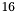
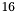
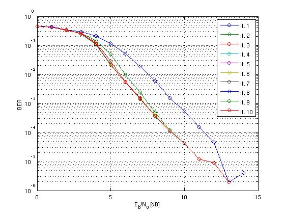

Bit Interleaved Coded Modulation
The Bit Interleaved Coded Modulation (BICM) system uses a Non-recursive non-Systematic Convolutional (NSC) code whose bits are interleaved (interleaver length is ) and then mapped to complex symbols ( QAM modulation is used). Channel capacity is increased by using higher order modulations. Gray and binary mapping (following Matlab's terminology) are used. The channel is assumed flat fading, defined only by an attenuation. The attenuations are generated from a complex Gaussian distribution with variance
) and then mapped to complex symbols ( QAM modulation is used). Channel capacity is increased by using higher order modulations. Gray and binary mapping (following Matlab's terminology) are used. The channel is assumed flat fading, defined only by an attenuation. The attenuations are generated from a complex Gaussian distribution with variance  on each dimension. The received signal is affected by an Additive White Gaussian Noise (AWGN). Note that the BICM system is a type of Serial Concatenated Code (SCC).
on each dimension. The received signal is affected by an Additive White Gaussian Noise (AWGN). Note that the BICM system is a type of Serial Concatenated Code (SCC).

BICM system model

Turbo receiver for BICM systems

Performances of the BICM using Gray mapping and logMAP algorithm

Performances of the BICM using Gray mapping and maxlogMAP algorithm

Performances of the BICM using binary mapping and logMAP algorithm

Performances of the BICM using binary mapping and maxlogMAP algorithm
| max log MAP | 43 min, 51 sec | 52 min, 20 sec |
| log MAP | 1 hr, 10 min, 53 sec | 1 hr, 16 min, 33 sec |
Programs used to obtain the figures: BICM.cpp and BICM.m.
Reference: A. Tonello, ''Space-time bit-interleaved coded modulation with an iterative decoding strategy,`` in Vehicular Technology Conference, vol. 1, pp. 473-478 vol.1, 2000